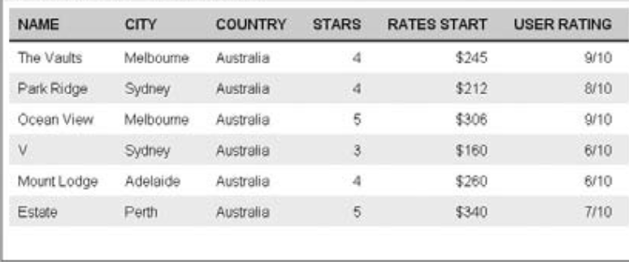

Tables
By their nature, tables often show a lot more information than one user will be interested in. A single
visitor is likely to want to filter out a percentage of the information available. For example, if you are
looking for train times, you want to know the times from your local station (not each station between
you and the destination). By carefully designing your table, you can make it easier for people to find that
information quickly.
There are some techniques that can make your tables a lot easier for users to read:
- Padding
- Headings
- Shading columns
Padding
It is important to allow padding around each item so that there is space between each cell in the
table (and between the content of the cell and any borders if they are used). When the content of table
cells is allowed to touch either the edges of any cells or the neighboring cells, it becomes much harder
to read. I tend to leave a little bit more space to the left and right of a column rather than above or
beneath it. Here you can see a rule that adds padding to each < td > and < th > element:
th, td {padding:10px 20px 8px 10px;}
Headings
All table headings should be in bold, which is the default style for the < th > element. I also tend to make
headers uppercase and underline the headings with a dark line to separate the headings from the
content:
th {
border-bottom:2px solid #000000;
text-transform:uppercase;
background-color:#d6d6d6;
text-align:left;}
Shading Alternate Rows
Shading alternate rows will help users follow along the lines. You should only shade every other line,
preferably using a slightly lighter shade than the heading, as shown in Figure 10 - 40.
You might also find it helpful to align numerical data to the right of the column and leave words aligned
to the left.
Remember that whatever background colors you use, there must be a good contrast between the
background and the text in order for the user to be able to read it easily. The very light gray in this
example is a good example of a color that does not dramatically affect the readability of the table itself.
If we put all of that together, the following is the CSS for the table you have been looking at:
th, td {
padding:8px 20px 8px 10px;
margin:0px;}
th {
border-bottom:2px solid #000000;
text-transform:uppercase;background-color:#d6d6d6;
text-align:left;}
.even{background-color:#efefef;}
.number {text-align:right;}
and the overall output will be presented as:

Forms
I have yet to meet anyone who enjoys filling in forms — especially on the Web. Therefore, if your site
must include a form, good design is essential or people will not fill it in.
Before Designing the Form
Before you address how a form should really look, you need to do some preparation — this is just like
the preparation you need to do before you start designing a site, although it should take less time.
Listing Required Information First
When designing a form, you should start out by creating a complete list of the information you require
from a user. You might start with a general list with items such as login details, name, mailing address,
and e - mail address, but you then need to make sure that you know what makes up each item. For
example, do you need to get a user ’ s first name and last name separately? If so these will have to be
separate items on the form. What makes up the address: house number/name, street name, suburb, zip
code, and so on? Which ones need to be separated from the others?
The following is a list of the information that is needed for our registration form:
Login information
- User ’ s name
- User ’ s address
- User ’ s contact details
When this is broken down, the exact information that ’ s needed is as follows:
Login information:
Username and password
Name: First name, last name
Land address: Street address, city, zip code
Contact information: E - mail address, area code, phone number
When you are creating forms, you should ask only for the information you really need to get a job
done. When gathering information from visitors, it ’ s very tempting to ask as many questions as you can;
but the longer a form is, the less likely it is that users will complete it.
Model Forms Users Are Familiar With
If you are creating an online application that represents a form that would previously have been filled in
on paper and that your users would be familiar with, then you should make sure that your online form
reflects that paper form. (If the form would not have been familiar to users this is not necessary.) If the
goal of your application is to put existing software online, then it could also be modeled on the software
interface.
The reason for modeling your form on something the user is familiar with is quite obvious: it makes it
easier for the user to fill in. That is not to say that the layout of the form should be exactly the same
(often paper forms cram too many questions into a small space). Rather, you should be asking similar
questions in a similar order and grouping.
Are Users Going to Provide the Same Information Each Time?
Will users have to provide the same information each time they visit the site? Or will some data be
stored in a database (or other application) and retrieved when they log in again? For example, if you are
working on an online store, once the user has logged in, will the application remember the user ’ s name,
address, and contact details?
You should also consider how your form is going to be processed. If it ’ s going to be processed by a
human, the human can interpret the data the user enters, whereas if it goes straight into a database, users
must be a lot more precise about the information they enter. This may affect your choice of form control
required to collect the information.
What Else Needs to Appear on the Form?
Several forms contain extra information, such as shipping information, price lists, legal notices, and so
on. Before you start designing the form, you should be aware of all the information that might be put on
it, not just the form controls themselves.